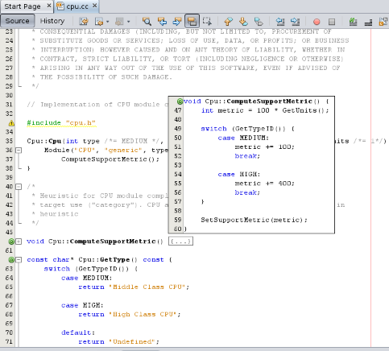
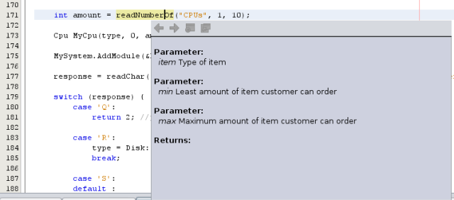
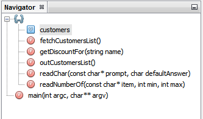
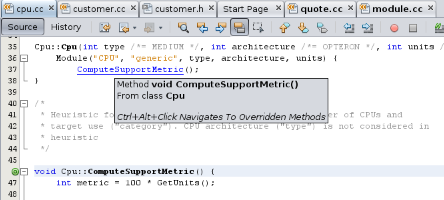
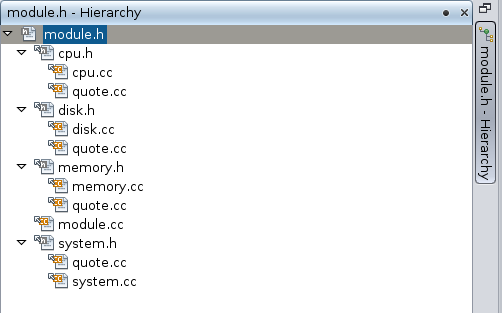
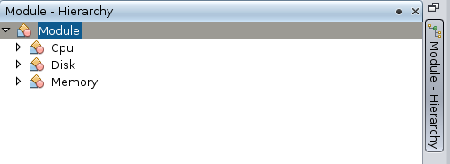

Apache NetBeans
Apache NetBeansLatest release
Editando e Navegando em Arquivos de Código-fonte C/C++ - Tutorial do NetBeans IDE
| This tutorial needs a review. You can edit it in GitHub following these contribution guidelines. |
Colaboração de _Ann Rice e mantida por Susan Morgan Março de 2014_ [Número da revisão: V8.0]
Este tutorial resumido orienta você em algumas funcionalidades de navegação e edição dos arquivos de código-fonte em um projeto C ou C++ no NetBeans IDE.
Requisitos
Para seguir este tutorial, são necessários os recursos e o software a seguir.
| Software ou Recurso | Versão Necessária |
|---|---|
NetBeans IDE |
|
JDK (Java Developer Kit) |
Consulte as Instruções de Instalação do NetBeans IDE 8.0 e a + Configuração do NetBeans IDE para o C/C+/Fortran para obter informações sobre o download e a instalação do software necessário.
Projetos de Amostra
Apenas deseja brincar com alguns projetos? No IDE, escolha Arquivo > Projeto Novo e, em seguida, abra a categoria Amostras e a subcategoria C/C. O IDE fornece vários projetos C e C de amostra para ajudá-lo a se familiarizar com o IDE.
Criando o Projeto de Amostra
O NetBeans IDE com o plug-in C/C++ fornece funcionalidades avançadas de edição para modificar o código-fonte. Para explorar essas funcionalidades, usaremos o projeto Quote . Caso você ainda não tenha criado esse projeto, faça o seguinte:
-
Escolha Arquivo > Novo Projeto.
-
No assistente do projeto, expanda a categoria Amostras e selecione a subcategoria C/C++.
-
Selecione o projeto
Quote. Clique em Próximo e, em seguida, Finalizar.
Editando Arquivos de Código-fonte C e C++
Definindo o Estilo de Formatação
Você pode utilizar a janela Opções para configurar o estilo de formatação default dos seus projetos C e C++.
-
Escolha Ferramentas > Opções.
-
Clique em Editor no painel superior da janela.
-
Clique na guia Formatação.
-
Selecione a linguagem C da lista drop-down Linguagem, pois o projeto Quote utiliza C.
-
Selecione o estilo que deseja definir na lista drop-down Estilo.

-
Modifique as propriedades de estilo, conforme desejado.
Dobrando Blocos de Código em Arquivos C e C++
Para alguns tipos de arquivos, você pode utilizar a funcionalidade de dobramento de código para contrair blocos de código, de forma que somente a primeira linha do bloco apareça no Editor de Código-fonte.
-
No projeto da aplicação
Quote_1, abra a pasta Arquivos do código-fonte e clique duas vezes no arquivocpu.ccpara abri-lo no Editor de Código. -
Clique no ícone para contrair (caixa pequena com sinal de menos) na margem esquerda para dobrar o código de um dos métodos.
-
Passe o mouse sobre o símbolo
{…}à direita do bloco dobrado para exibir o código no bloco.

Utilizando Realce de Semântica
Se essa opção estiver selecionada, quando você clicar em uma classe, função, variável ou macro, todas as ocorrências dessa classe, função, variável ou macro no arquivo atual são realçadas.
-
Escolha Ferramentas > Opções.
-
Clique em Editor no painel superior da janela.
-
Clique na guia Realce.
-
Certifique-se de que todas as caixas de seleção estejam marcadas.
-
Clique em OK.
-
No arquivo
customer.ccdo projetoQuote_1, observe que esses nomes de métodos estão realçados com negrito. -
Clique em uma ocorrência da classe
Cliente. -
Toas as ocorrências da classe
Clienteno arquivo estão realçadas com um fundo amarelo. A margem da direita também mostra marcações que indicam pontos onde uma ocorrência está localizada no arquivo. As marcações permitem a visualização de quantas ocorrências existem sem rolar o arquivo. É possível clicar nas marcações para saltar às ocorrências que elas representam.

-
Para navegar facilmente entre as ocorrências, pressione as teclas Alt+Seta para baixo para ir para a próxima ocorrência e Alt+Seta para cima para ir para a ocorrência anterior.
-
Abra o arquivo
customer.h, localizado na pasta Cabeçalho e observe que nomes de método estão novamente realçados em negrito.

Utilizando Autocompletar Código e Documentação
O IDE tem uma funcionalidade dinâmica de autocompletar código C e C++ que permite que você digite um ou mais caracteres e, em seguida, exiba uma lista de possíveis classes, métodos, variáveis, e assim por diante, que podem ser usados para concluir a expressão automaticamente.
O IDE também localiza dinamicamente documentações para as classes, funções, métodos e etc. e exibe a documentação em uma janela pop up.
-
Abra o arquivo
quote.ccno projetoQuote_1 -
Na primeira linha em branco do
quote.cc, digite a letra C em maiúsculo e pressione Ctrl-Espaço. A caixa de autocompletar código exibe uma pequena lista que inclui as classesCpueCliente. Uma janela de documentação também aparece, mas exibe "Nenhuma documentação encontrada" porque a fonte do projeto não inclui documentação para esse código. -
Expanda a lista de itens pressionando Ctrl-Espaço novamente.

-
Utilize as teclas de seta ou o mouse para realçar uma função de biblioteca padrão como
calloce a janela da documentação exibe a página do manual para essa função se a página do manual está acessível para o IDE.

-
Selecione a classe
Clientee pressione Enter.
-
Complete a nova instância da classe
Clientedigitando "andrew;". Na próxima linha, digite a letraae pressione Ctrl-Espaço. A caixa de autocompletar código exibe uma lista de opções começando com a letraa, tais como argumentos de método, campos de classe e nomes globais, que podem ser acessados no menu de contexto.

-
Clique duas vezes na opção
andrewpara aceitá-la e digite um ponto depois dela. Pressione Ctrl + Espaço e você receberá automaticamente uma lista dos métodos e campos públicos da classeCliente.

-
Delete o código que você adicionou.
Adicionando Documentação de Códigos-fonte
É possível adicionar comentários ao código para gerar automaticamente documentação para as funções, classes e métodos. O IDE reconhece comentários que utilizam sintaxe Doxygen e gera documentação automaticamente. O IDE também pode gerar automaticamente um bloqueio aos comentários para documentar a função abaixo do comentário.
-
No arquivo
quote.cc, coloque o cursor na linha 75 ou na linha abaixo da linhaint readNumberOf(const char* item, int mín, int máx) {
-
Digite uma barra e dois asteriscos e pressione Enter. O editor insere um comentário doxygen-formatado para a classe
readnumberof.

-
Adicione algum texto descritivo para cada uma das linhas @param e salve o arquivo.

-
Enquanto a classe
readNumberOfainda está realçada em amarelo, clique em um dos marcadores de ocorrência na direita para saltar para o local onde a classe é utilizada.
-
Clique na classe
readNumberOfna linha para qual você saltou e pressione Ctrl-Shift-Espaço para mostrar a documentação recentemente adicionada aos parâmetros.

-
Clique em qualquer lugar no arquivo para finalizar a janela de documentação, e clique na classe
readNumberOf.
-
Escolha Código-fonte > Mostrar Documentação para abrir novamente a janela de documentação da classe.
Usando Modelos de Código
O Editor de Código-fonte tem um conjunto de modelos de código personalizáveis para snippets de código C e C++. É possível gerar o snippet de código completo digitando a abreviação e pressionando a tecla Tab. Por exemplo, no arquivo quote.cc do projeto Quote :
-
Digite
unsseguido por uma guia eunsexpande paranão assinado. -
Digite
iffseguido por uma guia eiffexpande paraif(exp) {}. -
Digite
ifeseguido por uma guia eifeexpande paraif(exp) {} else {}. -
Digite
foriseguido por uma guia eforiexpande parapara (int i = 0; i < size; i++) { Object elem = array[i];.
Para ver todos os modelos do código disponíveis, modifique o código modelos, criar seus próprios modelos de código, ou selecione uma chave diferente para expandir a modelos de código:
-
Escolha Ferramentas > Opções.
-
Na caixa de diálogo Opções, selecione Editor e clique na guia Modelos de Código.
-
Selecione o idioma apropriado na lista drop-down de Idiomas.

Usando Conclusão de Par
Quando você edita os arquivos-fonte C e C++, o Editor de Código-fonte efetua a correspondência "inteligente" de pares de caracteres, como colchetes, parênteses e aspas. Quando você digita um desses caracteres, o Editor de Código-fonte insere automaticamente o caractere de fechamento.
-
No projeto
Quote_1, coloque o cursor na linha 115 do arquivomodule.cce pressione Retornar para abrir uma linha nova. -
Digite
enum state {e pressione Retornar. O colchete de fechamento e o ponto-e-vírgula são adicionados automaticamente e o cursor é colocado na linha entre os colchetes. -
Digite
inválido=0, com sucesso=1na linha entre os colchetes para concluir a enumeração. -
Na linha após o
};de fechamento da enumeração, digiteif (e você deverá ver se um parênteses de fechamento foi adicionado automaticamente e o cursor foi colocado entre os parênteses. -
Digite
v==nullentre os parênteses. Em seguida, digite{e a nova linha depois do parêntese à direita. O colchete de fechamento é adicionado automaticamente. -
Delete o código que você adicionou.
Localizando Texto em Arquivos do Projeto
Você pode usar a caixa de diálogo Localizar nos Projetos para pesquisar projetos para instâncias de texto especificado ou uma expressão regular.
-
Abrir a caixa de diálogo Localizar nos Projetos por meio de um dos seguintes procedimentos:
-
Escolha Editar >Localizar nos Projetos.
-
Clique com o botão direito do mouse no projeto na janela Projetos e escolha Localizar.
-
Pressione Ctrl+Shift+F.
-
-
Na caixa de diálogo Localizar nos Projetos, selecione a guia de Pesquisa Default ou a guia Grep. A guia Grep usa o utilitário
grep, que fornece uma pesquisa mais rápida, principalmente para projetos remoto.

-
Na guia Grep, digite o texto ou expressão regular que você deseja pesquisar, especifique o escopo da pesquisa e o padrão de nome do arquivo e marque a caixa de seleção Abrir em Nova Guia, de forma que você possa salvar várias pesquisas em guias separadas.
-
Clique em Localizar. A guia Resultados da Pesquisa lista os arquivos em que o texto ou expressão regular é encontrado.
Os botões da margem esquerda permitem que você altere sua view dos resultados da pesquisa.

-
Clique no botão Expandir/Contrair para contrair a lista de arquivos, de forma que só os nomes de arquivo sejam mostrados. Clique nos outros botões para mostrar os resultados da pesquisa, como uma árvore de diretório ou uma lista de arquivos. Estas opções são úteis quando você executa uma pesquisa em vários projetos.
-
Clique duas vezes em um dos itens da lista e o IDE o conduzirá para o local correspondente no editor de código-fonte.
Navegando em Arquivos de Código-fonte C e C++
O NetBeans IDE com o plug-in C/C++ fornece funcionalidades avançadas de edição para modificar o código-fonte. Para explorar essas funcionalidades, continue usando o projeto Quote_1 .
Utilizando a Janela Classes
A janela Classes permite exibir todas as classes do projeto ++ e os membros e campos de cada classe.
-
Clique na guia Classes para exibir a janela Classes. Se a guia Classes não for exibida, escolha Janela > Classes
-
Expanda o nó
Quote_1na janela Classes. São listadas todas as classes do projeto. -
Expanda a classe
Cliente.

-
Clique duas vezes na variável
namepara abrir o arquivo de cabeçalhocustomer.h.
Usando a Janela Navegador
A janela Navegador oferece uma view compacta do arquivo selecionado atualmente e simplifica a navegação entre diferentes partes do arquivo. Se a janela do Navegador não for exibida, escolha a janela Navegador > Navegando >para abri-la.
-
Clique em qualquer parte do arquivo
quote.ccna janela Editor. -
Uma view compacta do arquivo é exibida na janela Navegador.

-
Para navegar para um elemento do arquivo, clique duas vezes no elemento na janela Navegador e o cursor na janela Editor se move para esse elemento.
-
Clique com o botão direito no Navegador para escolher uma maneira diferente para classificar os elementos, agrupar os itens ou filtrá-los.
Para descobrir o que os ícones no Navegador representam, abra a ajuda on-line do IDE escolhendo Ajuda > Conteúdo de Ajuda e busque por "ícones de navegação" na janela de ajuda.
Localizando Classe, Método e Usos de Campo
Você pode utilizar a janela Usos para mostrar todo lugar em que uma classe (estrutura), função, variável, macro ou arquivo é usado no código-fonte do projeto.
-
No arquivo
customer.cc, clique com o botão direito do mouse na classeCliente, linha 42 e escolha Localizar Usos. -
Na caixa de diálogo Localizar Usos, clique em Localizar.
-
A janela Usos se abre e exibe todos os usos da classe
Clientenos arquivos de código-fonte do projeto.

-
Clique nos botões de seta na margem esquerda para percorrer as ocorrências e mostrá-las no Editor, ou altere entre view lógica e física. Você também pode filtrar as informações usando uma segunda coluna dos botões na margem esquerda.
Usando o Gráfico de Chamada
A janela Gráfico de Chamada exibe duas views das relações de chamadas entre as funções no projeto. Uma view em árvore mostra as funções chamadas de uma função selecionada ou as funções que chamam a função selecionada. Uma view gráfica mostra a relação chamada utilizando setas entre as funções chamadas e de chamada.
-
No arquivo
quote.cc, clique com o botão direito do mouse na funçãomaine escolha Mostrar Gráfico de Chamada. -
A janela Gráfico de Chamada abre e exibe uma view em árvore e gráfica de todas as funções chamadas da função
principal.

Se não for possível visualizar todas as funções mostradas aqui, clique no terceiro botão no lado esquerdo da janela Gráfico de Chamada para mostrar "quem é chamado para essa função."
-
Expanda o nó
endlpara exibir as funções chamadas por tal função. Observe que o gráfico é atualizado para mostrar as funções chamadas porendltambém.
-
Clique no segundo botão, chamado Trazer para o Foco no lado esquerdo da janela para focar na função
endle, em seguida, clique no quarto botão Quem Chama esta Função para exibir todas as funções que chamam a funçãoendl.

-
Expanda alguns nós da árvore para ver mais funções.

Usando Hiperlinks
A navegação de hiperlink permite que você salte da chamada de uma classe, método, variável ou constante para a sua declaração, e da sua declaração para sua definição. Os hiperlinks também permitem que você salte de um método que é substituído para o método que o substitui e vice-versa.
-
No arquivo
cpu.ccdo projetoQuote_1, mova o mouse sobre a linha 37 enquanto o Ctrl estiver pressionado. A funçãoComputeSupportMetricestá realçada e uma anotação exibe informações sobre a função.

-
Clique no hiperlink e o editor saltará para a definição da função.

-
Mova o mouse sobre a definição quanto o Ctrl estiver pressionado e clique no hiperlink. O editor salta para a declaração da função no arquivo de cabeçalho
cpu.h.

-
Clique na seta da esquerda na barra de ferramentas do editor (segundo botão da esquerda) e o editor salta de volta para a definição no
cpu.cc.
-
Passe o cursor do mouse sobre o círculo verde na margem esquerda e veja a anotação que indica que este método substitui qualquer outro método.

-
Ao clicar no círculo verde para ir para o método substituído, você salta para o arquivo de cabeçalho
module.h, que mostra um círculo cinza na margem para indicar que o método está substituído.
-
Um clique no círculo cinza e o editor exibe uma lista de métodos que substituíram esse método.

-
Ao clicar no item
Cpu::ComputeSupportMetric, você salta de volta para a declaração do método no arquivo de cabeçalhocpu.h.
Utilizando a Hierarquia de Inclusão
A janela Hierarquia de Inclusão permite que você inspecione todos os arquivos-fonte e de cabeçalho que são direta ou indiretamente incluídos em um arquivo-fonte ou todos os arquivos de cabeçalho que direta ou indiretamente incluem um arquivo de cabeçalho.
-
No projeto
Quote_1, abra o arquivomodule.ccno Editor de Código-fonte. -
Clique com o botão direito do mouse na linha
#include "module.h"no arquivo e escolha Navegar > Exibir Hierarquia de Inclusões. -
Como default, a janela Hierarquia exibe uma lista sem formatação de arquivos que incluem diretamente o arquivo de cabeçalho. Clique no botão mais à direita na parte inferior da janela para alterar a view em árvore. Clique no segundo botão da direita para alterar a exibição para todos os arquivos que incluem ou são incluídos. Expanda os nós na view em árvore para ver todos os arquivos de código-fonte que incluem o arquivo de cabeçalho.

Utilizando a Hierarquia de Tipo
A janela Hierarquia de Tipo permite que você inspecione todos os subtipos ou supertipos de uma classe.
-
No projeto
Quote_1, abra o arquivomodule.h. -
Clique com o botão direito do mouse na declaração da classe
Móduloe escolha Navegar > Exibir Hierarquia de Tipo. -
A janela Hierarquia exibe todos os subtipos da classe Módulo.

[[Próximas Etapas]]
Consulte link:debugging.html[+Depurando Projetos C/C+] para um tutorial sobre a utilização de algumas das funcionalidades para depurar um projeto C ou C no NetBeans IDE.
link:mailto:users@cnd.netbeans.org?subject=Feedback:%20Editing%20and%20Navigating%20C/C+%20Source%20Files%20-%20NetBeans%20IDE%207.3%20Tutorial[+Enviar Feedback neste Tutorial]